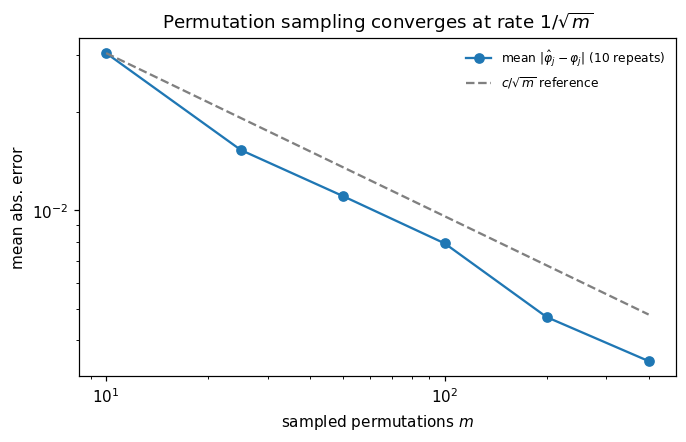
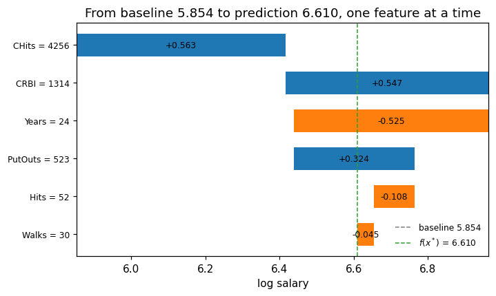
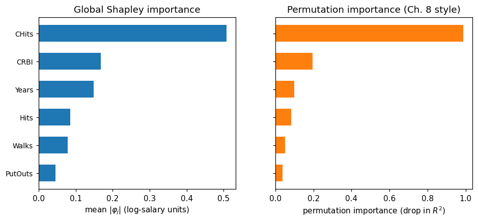
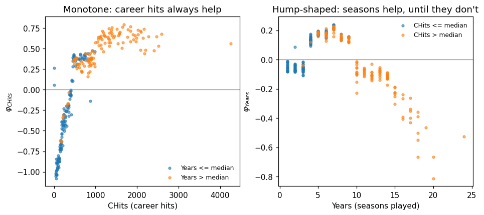
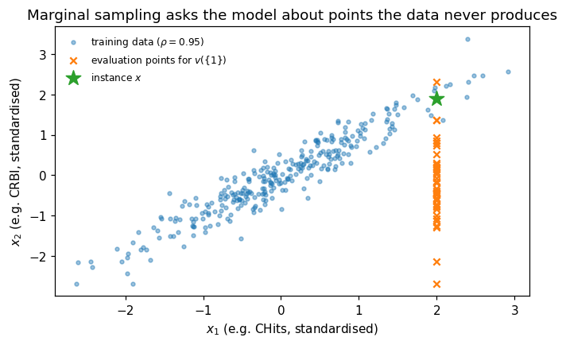

This notebook runs on Colab as-is. The badge link above and the GITHUB_RAW line in the setup cell already point to this repository, so everything installs and loads automatically.
Advanced Module A2 — Explainable AI with Shapley Values¶
Lab: the value function, exact Shapley by enumeration, Monte-Carlo sampling, local and global pictures, pitfalls¶
Course: Quantitative Research Methods Instructor: Prof. Dr. Christoph Weisser Source: James, Witten, Hastie, Tibshirani & Taylor (2023), An Introduction to Statistical Learning, with Applications in Python, Springer. Companion code at statlearning.com. This advanced module extends the book with Shapley-value explanations (Shapley 1953; Lundberg & Lee 2017).
Goal. Fit a gradient-boosted model on Hitters and explain its predictions from scratch: build the marginal value function on a background sample; enumerate all \(2^6\) coalitions for exact Shapley values and verify the efficiency axiom to machine precision; approximate them by permutation sampling and watch the \(1/\sqrt{m}\) convergence; read local waterfalls, global importance and dependence plots; and run straight into the two classic pitfalls — correlated features and retrain instability.
Setup¶
Run this cell once. The ISLP package can be installed with pip install ISLP. As an alternative, the same data sets are available as CSVs in the workspace’s ALL CSV FILES - 2nd Edition folder.
Google Colab: this notebook also runs on Colab out of the box — the setup cell below installs any missing packages and downloads the data automatically.
# --- Setup: runs locally AND on Google Colab --------------------------------
# Silence only the spurious 'encountered in matmul' RuntimeWarnings that the macOS
# Accelerate BLAS emits; real warnings (deprecations, model caveats) stay visible.
import warnings
warnings.filterwarnings('ignore', message='.*encountered in matmul', category=RuntimeWarning)
import importlib.util, os, subprocess, sys
IN_COLAB = 'google.colab' in sys.modules
def _ensure(pkg, import_name=None):
"""pip-install pkg (quietly) if its import is missing."""
if importlib.util.find_spec(import_name or pkg) is None:
subprocess.run([sys.executable, '-m', 'pip', 'install', '-q', pkg], check=False)
if IN_COLAB: # Colab ships numpy/pandas/sklearn/statsmodels; add course extras
for _pkg, _imp in [('ISLP', 'ISLP')]:
_ensure(_pkg, _imp)
import numpy as np
import pandas as pd
import matplotlib.pyplot as plt
rng = np.random.default_rng(2024)
plt.rcParams['figure.dpi'] = 110
try:
from ISLP import load_data
HAVE_ISLP = True
except ImportError:
HAVE_ISLP = False
print('ISLP not installed; using CSV / URL fallbacks.')
# Local CSV location (repo layout first, then legacy paths, then a data/ cache).
_CANDIDATES = ['../ALL CSV FILES - 2nd Edition',
'ALL CSV FILES - 2nd Edition',
'../../ALL CSV FILES - 2nd Edition',
'../../../ALL CSV FILES - 2nd Edition', 'data']
CSV = next((p for p in _CANDIDATES if os.path.isdir(p)), 'data')
# GITHUB_RAW lets a fresh Colab runtime fetch any
# CSV that is neither in ISLP nor already local (spaces in the folder -> %20).
GITHUB_RAW = ('https://raw.githubusercontent.com/ChrisW09/Quantitative-Research-Methods/main/'
'ALL%20CSV%20FILES%20-%202nd%20Edition')
# The four datasets NOT in the ISLP package -> load from the book's official
# site so the notebook works on a fresh Colab even before the repo is published.
KNOWN_URLS = {
'Advertising': 'https://www.statlearning.com/s/Advertising.csv',
'Heart': 'https://www.statlearning.com/s/Heart.csv',
'Income1': 'https://www.statlearning.com/s/Income1.csv',
'Income2': 'https://www.statlearning.com/s/Income2.csv',
}
def load(name, **read_csv_kwargs):
"""Load a course dataset. Order: ISLP package -> R datasets -> local CSV
-> official book URL -> your GitHub repo. Works locally and on Colab."""
if HAVE_ISLP:
try:
return load_data(name)
except Exception:
pass
if name == 'USArrests': # classic R dataset, not in ISLP
try:
import statsmodels.api as sm
return sm.datasets.get_rdataset('USArrests', 'datasets').data
except Exception:
pass
path = f'{CSV}/{name}.csv'
if os.path.exists(path): # running from the repo (local)
return pd.read_csv(path, **read_csv_kwargs)
remotes = ([KNOWN_URLS[name]] if name in KNOWN_URLS else []) + [f'{GITHUB_RAW}/{name}.csv']
for url in remotes: # fresh Colab: stream over https
try:
return pd.read_csv(url, **read_csv_kwargs)
except Exception:
continue
raise FileNotFoundError(
f"Could not load {name!r}. Put the CSV in '{CSV}/' or check your connection for the GITHUB_RAW fallback.")
ISLP not installed; using CSV / URL fallbacks.
1. Data and model¶
The testbed of the deck: Hitters — 322 baseball players from the 1986/87 season, 59 missing salaries dropped, \(n = 263\). Target: \(\log(\texttt{Salary})\) (salaries in $1,000, range 67.5–2,460 — the log tames the right tail). Six features, small enough for exact \(2^6 = 64\)-coalition Shapley values.
from sklearn.ensemble import GradientBoostingRegressor
Hitters = load('Hitters').dropna().reset_index(drop=True)
FEATS = ['Years', 'CHits', 'CRBI', 'Walks', 'Hits', 'PutOuts']
p = len(FEATS)
X = Hitters[FEATS].to_numpy(float) # (263, 6)
y = np.log(Hitters['Salary'].to_numpy()) # log $1000s
f = GradientBoostingRegressor(random_state=2024).fit(X, y)
print(f'n = {len(X)}, train R^2 = {f.score(X, y):.3f}')
i_star = 188 # the 24-season career-hits record holder
x_star = X[i_star]
print('x* =', dict(zip(FEATS, x_star.astype(int))))
print(f'actual salary ${Hitters["Salary"][i_star]:.0f}k, f(x*) = {f.predict(x_star.reshape(1, -1))[0]:.4f} log-$'
f' (= ${np.exp(f.predict(x_star.reshape(1, -1))[0]):.0f}k)')
n = 263, train R^2 = 0.965
x* = {'Years': np.int64(24), 'CHits': np.int64(4256), 'CRBI': np.int64(1314), 'Walks': np.int64(30), 'Hits': np.int64(52), 'PutOuts': np.int64(523)}
actual salary $750k, f(x*) = 6.6102 log-$ (= $743k)
Reading the output. Training \(R^2 = 0.965\) — an accurate model nobody can read. Row 188 is our running example: a 24-season veteran holding the career-hits record (CHits \(= 4256\)), actual 1987 salary $750k, model prediction \(f(x^\ast) = 6.610\) log-dollars \(\approx \$743\)k. The question the rest of the notebook answers: which features account for that prediction?
2. The value function¶
Features are players; a coalition \(S\) means “these feature values are known to be \(x_S\)”. The marginal (interventional) value function pins the known features and draws the rest from a background sample:
rng = np.random.default_rng(2024) # house seed
bg = X[rng.choice(len(X), 100, replace=False)] # background sample, B = 100
B = len(bg)
base = f.predict(bg).mean() # phi_0 = E[f]
def v(S, x):
"""Marginal value function: pin the features in S at x's values."""
Z = bg.copy()
if S:
Z[:, list(S)] = x[list(S)]
return f.predict(Z).mean() - base
fx = f.predict(x_star.reshape(1, -1))[0]
print(f'baseline phi_0 = {base:.4f} log-$ (= ${np.exp(base):.0f}k)')
print(f'v(empty) = {v((), x_star):.4f} (knowing nothing: 0 by construction)')
print(f'v(full) = {v(tuple(range(p)), x_star):.4f} vs f(x*) - phi_0 = {fx - base:.4f}')
baseline phi_0 = 5.8538 log-$ (= $349k)
v(empty) = 0.0000 (knowing nothing: 0 by construction)
v(full) = 0.7564 vs f(x*) - phi_0 = 0.7564
Reading the output. The two anchors of the game: \(v_x(\varnothing) = 0\) (knowing nothing gives the average prediction, \(\varphi_0 = 5.854 \approx \$349\)k) and \(v_x(\mathcal P) = f(x^\ast) - \varphi_0 = 0.756\) (knowing everything gives this prediction). Efficiency will force the six attributions to share out exactly that \(0.756\).
3. Exact Shapley by enumeration¶
The Shapley value with subset weights \(w(S) = |S|!\,(p-|S|-1)!/p!\) — for \(p = 6\), a sum over all \(2^6 = 64\) coalitions. We time it, so the \(2^p\) cost is measured on your own clock, not asserted.
import itertools, time
from math import factorial
w = {s: factorial(s) * factorial(p - s - 1) / factorial(p) for s in range(p)}
def exact_shapley(x):
"""Exact Shapley values by enumeration over all 2^p coalitions."""
phi = np.zeros(p)
for j in range(p): # one player at a time
rest = [k for k in range(p) if k != j]
for r in range(p): # coalition sizes 0..p-1
for S in itertools.combinations(rest, r):
phi[j] += w[r] * (v(S + (j,), x) - v(S, x))
return phi
t0 = time.time()
phi_star = exact_shapley(x_star)
t1 = time.time()
print(pd.Series(phi_star, index=FEATS).round(4).to_string())
print(f'\nefficiency: sum phi_j = {phi_star.sum():.4f} f(x*) - phi_0 = {fx - base:.4f}')
print(f'wall time for one instance: {t1 - t0:.2f}s '
f'({2**p} coalitions x {B} background rows per v-call)')
Years -0.5245
CHits 0.5626
CRBI 0.5474
Walks -0.0452
Hits -0.1084
PutOuts 0.3244
efficiency: sum phi_j = 0.7564 f(x*) - phi_0 = 0.7564
wall time for one instance: 0.05s (64 coalitions x 100 background rows per v-call)
Reading the output. The career totals push the salary up (CHits \(+0.563\), CRBI \(+0.547\)), the 24 seasons push it down (\(-0.525\) — given those totals, more seasons mean less production per season), and the six numbers sum to \(0.7564 = f(x^\ast) - \varphi_0\) exactly. That is the efficiency axiom, and it is what no rival attribution method (gradients, single-feature ablations) gives you for free.
# Efficiency across ALL 263 players — vectorised over instances so it takes
# seconds, not minutes: one predict() call per coalition for every player at once.
def coalition_values(Xv):
"""v_i(S) for every instance i and every coalition S."""
m = len(Xv); vals = {}
for r in range(p + 1):
for S in itertools.combinations(range(p), r):
Z = np.repeat(bg[None, :, :], m, axis=0) # (m, B, p)
if S:
Z[:, :, S] = Xv[:, None, S]
vals[S] = f.predict(Z.reshape(m * B, p)).reshape(m, B).mean(axis=1)
return vals
def exact_shapley_all(Xv):
vals = coalition_values(Xv)
phi = np.zeros((len(Xv), p))
for j in range(p):
others = [k for k in range(p) if k != j]
for r in range(p):
for S in itertools.combinations(others, r):
Sj = tuple(sorted(S + (j,)))
phi[:, j] += w[r] * (vals[Sj] - vals[S])
return phi
PHI = exact_shapley_all(X) # (263, 6): one explanation per player
resid = np.abs(PHI.sum(axis=1) - (f.predict(X) - base)).max()
print(f'efficiency holds to machine precision on all 263 players: {resid < 1e-10}')
efficiency holds to machine precision on all 263 players: True
Reading the output. The largest violation is on the order of \(10^{-15}\) — floating-point noise. Validation teams re-run exactly this check on sampled instances: if reported attributions do not reproduce \(f(x) - \varphi_0\) to numerical precision, the explanation pipeline (wrong background, stale model version) is flagged before the numbers reach a customer letter.
4. Monte-Carlo permutation sampling¶
Exact enumeration doubles with every feature — \(2^{20} \approx 10^6\) coalitions at \(p = 20\). Permutation sampling (Štrumbelj & Kononenko, 2014) instead draws \(m\) random arrival orders; each feature is awarded the change in \(v_x\) it causes on arrival. Unbiased, with error \(\propto 1/\sqrt m\), at cost \(m \cdot p\) value-function calls — independent of \(2^p\).
def mc_shapley(x, m, rng):
"""Permutation-sampling estimate of all p Shapley values."""
est = np.zeros(p)
for _ in range(m): # m random arrival orders
perm = rng.permutation(p) # e.g. [3 0 5 1 4 2]
S, v_prev = [], 0.0 # empty room: v = 0
for j in perm: # features walk in
v_new = v(tuple(S) + (int(j),), x) # value after j joins
est[j] += v_new - v_prev # j's marginal contribution
v_prev = v_new # room now includes j
S.append(int(j))
return est / m # average over orders
rng = np.random.default_rng(2024) # fresh seeded generator
est = mc_shapley(x_star, 100, rng) # m = 100 orders
tab = pd.DataFrame({'exact': phi_star, 'mc (m=100)': est,
'abs error': np.abs(est - phi_star)}, index=FEATS)
print(tab.round(4).to_string())
print(f'\nmean abs error {np.abs(est - phi_star).mean():.3f},'
f' max {np.abs(est - phi_star).max():.3f}')
exact mc (m=100) abs error
Years -0.5245 -0.5164 0.0081
CHits 0.5626 0.5408 0.0218
CRBI 0.5474 0.5741 0.0267
Walks -0.0452 -0.0496 0.0044
Hits -0.1084 -0.1071 0.0014
PutOuts 0.3244 0.3145 0.0099
mean abs error 0.012, max 0.027
# Convergence study: mean absolute error over 10 repeats at each m.
# (Same algorithm, but each order's p value-function calls are batched into a
# single predict() so the study runs in seconds; the rng draws are identical.)
def mc_shapley_fast(x, m, rng):
est = np.zeros(p)
for _ in range(m):
perm = rng.permutation(p)
Z = np.repeat(bg[None, :, :], p, axis=0)
for k in range(p): # step k pins perm[:k+1]
Z[k:, :, perm[k]] = x[perm[k]]
vals = f.predict(Z.reshape(p * B, p)).reshape(p, B).mean(axis=1) - base
prev = 0.0
for k in range(p):
est[perm[k]] += vals[k] - prev
prev = vals[k]
return est / m
rng = np.random.default_rng(2024)
ms = [10, 25, 50, 100, 200, 400]
mean_err = []
for m in ms:
errs = [np.abs(mc_shapley_fast(x_star, m, rng) - phi_star).mean() for _ in range(10)]
mean_err.append(np.mean(errs))
print(f'm = {m:4d} mean abs error = {mean_err[-1]:.4f}')
fig, ax = plt.subplots(figsize=(7, 4))
ax.loglog(ms, mean_err, 'o-', color='C0', label=r'mean $|\hat\varphi_j - \varphi_j|$ (10 repeats)')
ax.loglog(ms, mean_err[0] * np.sqrt(ms[0] / np.asarray(ms, float)), '--', color='grey',
label=r'$c/\sqrt{m}$ reference')
ax.set(xlabel='sampled permutations $m$', ylabel='mean abs. error',
title=r'Permutation sampling converges at rate $1/\sqrt{m}$')
ax.legend(frameon=False, fontsize=8)
plt.show()
m = 10 mean abs error = 0.0303
m = 25 mean abs error = 0.0153
m = 50 mean abs error = 0.0111
m = 100 mean abs error = 0.0079
m = 200 mean abs error = 0.0047
m = 400 mean abs error = 0.0035

Reading the output. At \(m = 100\) every sign and the full ranking are already correct (mean error \(0.012\) — about \(2\)–\(5\%\) of the leading attributions). The error track \(0.0153 \to 0.0079 \to 0.0035\) from \(m = 25 \to 100 \to 400\): each quadrupling roughly halves the error, the \(1/\sqrt m\) signature. But note the cost accounting at \(p = 6\): \(m = 100\) orders cost \(m \, p \, B = 60{,}000\) model calls against \(6{,}400\) for exact enumeration — sampling only pays once \(2^p\) explodes.
5. Local and global pictures¶
The local waterfall: start at the baseline, add the attributions in order of size, land exactly on \(f(x^\ast)\). Swap i_star or the background and watch the baseline and every bar move together.
order = np.argsort(np.abs(phi_star))[::-1]
vals, labels = phi_star[order], [f'{FEATS[j]} = {x_star[j]:.0f}' for j in order]
lefts = base + np.concatenate(([0.0], np.cumsum(vals)[:-1]))
ypos = np.arange(p)[::-1]
fig, ax = plt.subplots(figsize=(7, 4))
ax.barh(ypos, vals, left=lefts, color=['C0' if v > 0 else 'C1' for v in vals], height=0.6)
for yp, lf, vv in zip(ypos, lefts, vals):
ax.annotate(f'{vv:+.3f}', (lf + vv/2, yp), ha='center', va='center', fontsize=8)
ax.axvline(base, color='grey', ls='--', lw=1, label=f'baseline {base:.3f}')
ax.axvline(fx, color='C2', ls='--', lw=1, label=f'$f(x^*)$ = {fx:.3f}')
ax.set(yticks=ypos, xlabel='log salary',
title='From baseline 5.854 to prediction 6.610, one feature at a time')
ax.set_yticklabels(labels, fontsize=8)
ax.legend(frameon=False, fontsize=8, loc='lower right')
plt.show()
# The same decomposition, read multiplicatively (log-scale attributions).
print('salary factors e^phi:', {FEATS[j]: round(float(np.exp(phi_star[j])), 2) for j in order})
print(f'all together: e^{phi_star.sum():.3f} = {np.exp(phi_star.sum()):.2f} x the baseline salary')

salary factors e^phi: {'CHits': 1.76, 'CRBI': 1.73, 'Years': 0.59, 'PutOuts': 1.38, 'Hits': 0.9, 'Walks': 0.96}
all together: e^0.756 = 2.13 x the baseline salary
Reading the output. The model prices this player at \(e^{0.756} = 2.13\) times the baseline: the record career totals multiply the salary by \(1.76\) (CHits) and \(1.73\) (CRBI), while the 24 seasons divide it by \(1/0.59\). Because the model predicts log salary, attributions are additive in logs — i.e. multiplicative in dollars. Always state the output scale before presenting.
# Global view: mean |phi_j| across all players vs Ch. 8's permutation importance.
from sklearn.inspection import permutation_importance
gimp = np.abs(PHI).mean(axis=0)
perm = permutation_importance(f, X, y, n_repeats=20, random_state=2024)
order = np.argsort(gimp)
fig, axes = plt.subplots(1, 2, figsize=(10, 4), sharey=True)
ypos = np.arange(p)
axes[0].barh(ypos, gimp[order], color='C0', height=0.6)
axes[0].set(yticks=ypos, xlabel=r'mean $|\varphi_j|$ (log-salary units)',
title='Global Shapley importance')
axes[0].set_yticklabels([FEATS[j] for j in order], fontsize=9)
axes[1].barh(ypos, perm.importances_mean[order], color='C1', height=0.6)
axes[1].set(xlabel='permutation importance (drop in $R^2$)',
title='Permutation importance (Ch. 8 style)')
plt.show()
print(f'mean|phi| CHits = {gimp[FEATS.index("CHits")]:.3f} '
f'perm importance CHits = {perm.importances_mean[FEATS.index("CHits")]:.3f} '
f'r(CHits, CRBI) = {np.corrcoef(X[:, 1], X[:, 2])[0, 1]:.3f}')

mean|phi| CHits = 0.508 perm importance CHits = 0.987 r(CHits, CRBI) = 0.947
Reading the output. Both rankings agree — CHits dominates — but the numbers answer different questions: mean \(|\varphi_j| = 0.508\) is an average contribution in log-salary units; permutation importance \(= 0.987\) is the drop in \(R^2\) when the feature is scrambled. Under correlation they can diverge: permuting CHits also destroys the information it shares with CRBI (\(r = 0.947\)), inflating its apparent solo importance.
# Dependence view: how each attribution varies with its own feature value.
chits, years = X[:, FEATS.index('CHits')], X[:, FEATS.index('Years')]
phi_ch, phi_yr = PHI[:, FEATS.index('CHits')], PHI[:, FEATS.index('Years')]
fig, axes = plt.subplots(1, 2, figsize=(10, 4))
hi = years > np.median(years)
axes[0].scatter(chits[~hi], phi_ch[~hi], s=10, alpha=0.6, color='C0', label='Years <= median')
axes[0].scatter(chits[hi], phi_ch[hi], s=10, alpha=0.6, color='C1', label='Years > median')
axes[0].axhline(0, color='grey', lw=0.8)
axes[0].set(xlabel='CHits (career hits)', ylabel=r'$\varphi_{CHits}$',
title='Monotone: career hits always help')
axes[0].legend(frameon=False, fontsize=8)
hi = chits > np.median(chits)
axes[1].scatter(years[~hi], phi_yr[~hi], s=10, alpha=0.6, color='C0', label='CHits <= median')
axes[1].scatter(years[hi], phi_yr[hi], s=10, alpha=0.6, color='C1', label='CHits > median')
axes[1].axhline(0, color='grey', lw=0.8)
axes[1].set(xlabel='Years (seasons played)', ylabel=r'$\varphi_{Years}$',
title="Hump-shaped: seasons help, until they don't")
axes[1].legend(frameon=False, fontsize=8)
plt.show()
print(f'phi_CHits: mean {phi_ch[chits < 250].mean():+.2f} below 250 career hits,'
f' {phi_ch[chits > 1000].mean():+.2f} above 1000')
print(f'phi_Years: mean {phi_yr[(years >= 5) & (years <= 7)].mean():+.2f} in seasons 5-7,'
f' {phi_yr[years > 15].mean():+.2f} beyond 15')

phi_CHits: mean -0.70 below 250 career hits, +0.63 above 1000
phi_Years: mean +0.19 in seasons 5-7, -0.45 beyond 15
Reading the output. \(\varphi_{\texttt{CHits}}\) rises monotonically — career volume always pays. \(\varphi_{\texttt{Years}}\) is hump-shaped: \(+0.19\) around seasons 5–7, \(-0.45\) beyond 15 — given career totals, extra seasons mean less production per season. Vertical spread at a fixed \(x\)-value is the fingerprint of interactions.
6. Pitfalls¶
Pitfall 1 — correlated features put the model off-manifold. Marginal sampling pins \(x_1\) and draws \(x_2\) from the background, ignoring their correlation: with \(\rho = 0.95\) most evaluation points sit outside the data ridge. In Hitters, \(r_{\texttt{CHits},\texttt{CRBI}} = 0.947\), so \(v(S)\) averages over impossible careers — like 4,256 hits with 3 RBI.
# Seeded illustration: two standardised features with rho = 0.95.
rng = np.random.default_rng(2024)
Z = rng.multivariate_normal([0, 0], [[1, 0.95], [0.95, 1]], size=300)
x_inst = np.array([2.0, 1.9])
bg2 = Z[rng.choice(300, 40, replace=False)]
mixed = np.column_stack([np.full(40, x_inst[0]), bg2[:, 1]]) # evaluating v({1})
fig, ax = plt.subplots(figsize=(7, 4))
ax.scatter(Z[:, 0], Z[:, 1], s=10, alpha=0.45, color='C0', label=r'training data ($\rho=0.95$)')
ax.scatter(mixed[:, 0], mixed[:, 1], marker='x', s=30, color='C1',
label=r'evaluation points for $v(\{1\})$')
ax.scatter(*x_inst, marker='*', s=160, color='C2', zorder=5, label='instance $x$')
ax.set(xlabel='$x_1$ (e.g. CHits, standardised)', ylabel='$x_2$ (e.g. CRBI, standardised)',
title='Marginal sampling asks the model about points the data never produces')
ax.legend(frameon=False, fontsize=8, loc='upper left')
plt.show()

# Pitfall 3 — attributions move when the model is retrained.
# Two stochastic refits, same data, same accuracy: watch the CHits/CRBI split move.
for seed in (1, 2):
g = GradientBoostingRegressor(random_state=seed, subsample=0.7).fit(X, y)
bse = g.predict(bg).mean()
def v2(S, x, g=g, bse=bse):
Z = bg.copy()
if S: Z[:, list(S)] = x[list(S)]
return g.predict(Z).mean() - bse
phi2 = np.zeros(p)
for j in range(p):
rest = [k for k in range(p) if k != j]
for r in range(p):
for S in itertools.combinations(rest, r):
phi2[j] += w[r] * (v2(S + (j,), x_star) - v2(S, x_star))
ch, cr = phi2[FEATS.index('CHits')], phi2[FEATS.index('CRBI')]
print(f'refit seed {seed}: train R^2 {g.score(X, y):.3f} '
f'phi_CHits {ch:+.3f} phi_CRBI {cr:+.3f} pair sum {ch + cr:+.3f}')
refit seed 1: train R^2 0.964 phi_CHits +0.702 phi_CRBI +0.521 pair sum +1.223
refit seed 2: train R^2 0.963 phi_CHits +0.600 phi_CRBI +0.545 pair sum +1.146
Reading the output. Two equally accurate models (\(R^2 \approx 0.96\)), and \(\varphi_{\texttt{CHits}}\) swings by \(0.10\) (about \(15\%\)) between them — while the pair’s sum barely moves. Correlated features are interchangeable to the fit, so the fit chooses arbitrarily and the attribution follows. Robust practice: report the group attribution for a correlated cluster, and freeze model + background + seed per reporting period. And remember Pitfall 2 throughout: an explanation describes the model, not the world — \(\varphi_j\) is not a causal effect.
Lecture exercises — worked Python solutions¶
These are the [Python]-tagged exercises from the lecture slides, solved step by step; run them cell by cell and compare with the slide solutions. Data loads through the load() helper defined in the Setup cell, so every cell works locally and on Colab.
Extended Exercise A2.1 — Monte-Carlo Shapley from scratch [Python]¶
Task (from the slides). Implement permutation sampling for the veteran instance \(x^\ast\) (row 188) and quantify its accuracy against the exact values:
write
mc_shapley(x, m, rng): sample \(m\) orderings withrng.permutation(p); for each, walk through the features, awarding each its change in \(v\) (start the walk at \(v(\varnothing) = 0\));run it with \(m = 100\) and
default_rng(2024); tabulate \(\hat\varphi_j\) against the exact \(\varphi_j\) and report the mean and maximum absolute error;estimate the error at \(m \in \{25, 100, 400\}\) (average over 10 repeats) — does quadrupling \(m\) halve the error?
compare total model calls of your \(m = 100\) run against exact enumeration at \(p = 6\); which wins here, and when does that flip?
# (1)-(2): mc_shapley was defined in Section 4 — rerun the m = 100 estimate.
rng = np.random.default_rng(2024)
est = mc_shapley(x_star, 100, rng)
print(pd.DataFrame({'mc (m=100)': est, 'exact': phi_star}, index=FEATS).round(4).to_string())
err = np.abs(est - phi_star)
print(f'\nmean abs error {err.mean():.3f}, max {err.max():.3f}')
# Expected: mean 0.012, max 0.027 (on CRBI); every sign and the ranking correct.
# (3): the convergence study of Section 4 already covers m = 25, 100, 400:
for m, e in zip(ms, mean_err):
if m in (25, 100, 400):
print(f'm = {m:3d}: mean abs error {e:.4f}')
# Expected: 0.0153 -> 0.0079 -> 0.0035 — quadrupling m roughly halves the error.
mc (m=100) exact
Years -0.5164 -0.5245
CHits 0.5408 0.5626
CRBI 0.5741 0.5474
Walks -0.0496 -0.0452
Hits -0.1071 -0.1084
PutOuts 0.3145 0.3244
mean abs error 0.012, max 0.027
m = 25: mean abs error 0.0153
m = 100: mean abs error 0.0079
m = 400: mean abs error 0.0035
(4) Cost accounting. Exact at \(p = 6\): \(2^p \cdot B = 64 \times 100 = 6{,}400\) model calls. MC at \(m = 100\): \(m \cdot p \cdot B = 100 \times 6 \times 100 = 60{,}000\) calls — nine times more, for an approximate answer. At \(p = 6\) exact enumeration wins outright. The flip is fast: exact doubles with every added feature (\(2^{20} \cdot B \approx 10^8\) calls at \(p = 20\)) while the MC budget grows only linearly in \(p\) — at \(p = 20\) the same \(m = 100\) costs \(200{,}000\) calls, now \(500\times\) cheaper than exact. Enumerate while you can (\(p \lesssim 15\)); sample when you must; and for tree ensembles, TreeSHAP gives exactness at neither price.
Exercise A2.5 — Explain another player [Python]¶
Task (from the slides). Row 0 of the cleaned data is a 14-season veteran: Years \(= 14\), CHits \(= 835\), CRBI \(= 414\), Walks \(= 39\), Hits \(= 81\), PutOuts \(= 632\); actual salary $475k. With the fitted model and exact_shapley:
compute \(f(x)\) and the six exact attributions \(\varphi_j\);
verify efficiency: \(\sum_j \varphi_j = f(x) - \varphi_0\);
name the largest positive and largest negative contribution and restate each as a multiplicative salary factor \(e^{\varphi_j}\).
# (1)-(2) ---------------------------------------------------------------
x0 = X[0]
print('x0 =', dict(zip(FEATS, x0.astype(int))), f' actual salary ${Hitters["Salary"][0]:.0f}k')
phi0_vec = exact_shapley(x0)
f0 = f.predict(x0.reshape(1, -1))[0]
print(pd.Series(phi0_vec, index=FEATS).round(3).sort_values(ascending=False).to_string())
print(f'\nf(x0) = {f0:.3f} log-$ (= ${np.exp(f0):.0f}k)')
print(f'efficiency: sum phi_j = {phi0_vec.sum():.3f} f(x0) - phi_0 = {f0 - base:.3f}')
# (3) --------------------------------------------------------------------
jmax, jmin = np.argmax(phi0_vec), np.argmin(phi0_vec)
print(f'largest positive: {FEATS[jmax]} {phi0_vec[jmax]:+.3f} -> factor e^phi = {np.exp(phi0_vec[jmax]):.2f}')
print(f'largest negative: {FEATS[jmin]} {phi0_vec[jmin]:+.3f} -> factor e^phi = {np.exp(phi0_vec[jmin]):.2f}')
x0 = {'Years': np.int64(14), 'CHits': np.int64(835), 'CRBI': np.int64(414), 'Walks': np.int64(39), 'Hits': np.int64(81), 'PutOuts': np.int64(632)} actual salary $475k
CHits 0.287
PutOuts 0.176
CRBI 0.112
Walks -0.037
Hits -0.100
Years -0.125
f(x0) = 6.167 log-$ (= $477k)
efficiency: sum phi_j = 0.313 f(x0) - phi_0 = 0.313
largest positive: CHits +0.287 -> factor e^phi = 1.33
largest negative: Years -0.125 -> factor e^phi = 0.88
Reading the output. \(f(x_0) = 6.167 \approx \$477\)k against an actual $475k — the model is nearly on the money here, and \(\sum_j \varphi_j = 0.313 = 6.167 - 5.854\) to machine precision. A solid career record raises the predicted salary by a third (CHits \(+0.287\), factor \(1.33\)); the 14 seasons apply the same late-career discount we saw in the dependence plot (\(-0.125\), factor \(0.88\)) — only milder than the record-holder’s \(-0.525\) at 24 seasons. One warning from the slides: never compare \(\varphi_j\) across explanations computed with different backgrounds — one report, one background.
7. Exercises¶
Re-run Section 2 with a different background (
rng.choicewith another seed, or \(B = 20\)). How much do \(\varphi_0\) and the veteran’s attributions move? What does that say about reporting requirements?Add
AtBatas a seventh feature and refit. How long does exact enumeration take now, and does theCHits/CRBI/AtBatsplit behave like the correlated-cluster warning of Section 6?In Section 4, track the standard error across orderings for \(m = 100\) instead of repeating the whole run. Does it give an honest error bar?
Compute group attributions \(\varphi_{\texttt{CHits}} + \varphi_{\texttt{CRBI}}\) for the two refits of Section 6 and for five more seeds. Is the group sum stable enough for a reason-code pipeline?